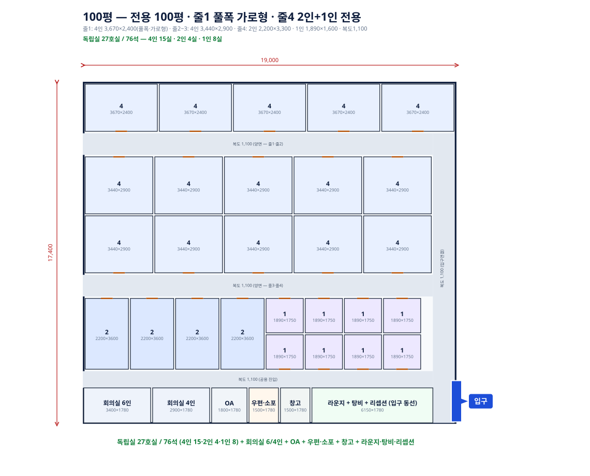

SOS 코워킹 최종보고서 (내부 종합본)
작성일: 2026-07-01 (최종 통합) · 내부용 종합문서 — 결론·컨셉·가격정책·CAPEX/고정비 전 항목 검증·배치도·경쟁사 원자료·입점면적 역산·후보권역·매물체크리스트까지 전부 포함. 다른 보고서 파일은 이 파일로 대체됨.
가격상향 버퍼 있음: 판교·분당·여의도 모두 FF·SP 1~4인실이 현재 만실 — 경쟁이 아니라 수요초과 상태. 아래 가격은 원가 기준 하한이며, 실제 출점 시 수요 확인되면 상향 여지 있음.
1. 프로젝트 컨셉
| 구분 | SOS 모델 | 기존 공유오피스와 차이 |
|---|
| 상품 | 1·2·4인 소형 프로젝트룸 중심. 최대 4인실 | 대형 라운지·공용부 중심이 아니라 독립 소형호실 중심 |
| 인원 | 5인실 이상 제외. 1~4인 소형팀만 타겟 | 5인 이상은 기존 공유오피스나 직접 임차로 이동할 가능성 높음. SOS는 1~4인 소형 독립실 공백에 집중 |
| 공간 | 전용 100~150평. 100평은 소형·특수상권형, 120~150평은 전국표준형 | 패스트파이브·스파크플러스보다 작은 면적으로 진입 가능(경쟁사는 최소 250~300평급 필요) |
| 계약 | 1주·1개월·1년 운영. 단, 1인 운영 효율화를 위해 1주 단기계약 비중은 제한 | 경쟁사 최소 3~6개월 계약 부담을 낮추되 무제한 단기는 아님 |
| 가격 | 원가+25%마진(cost-plus) 기준 전국표준가. 합리적 인테리어·1인 운영·라운지 축소로 원가 자체를 낮춤 | 고급 공용부 비용을 줄이고 소형 독립실에 집중해 가격경쟁력 확보 |
| 운영 | 무인 운영(상주 리셉션 없음), 현장담당 1인(150평은 1인+파트타임) | 상담·결제 인력을 줄이되 입실안내·퇴실점검·룸세팅은 사람이 필요해 단기계약 비중 통제 |
| 확장 | 전국표준모델(100~150평, 분당기준)은 어디든 적용 가능. 판교같은 특수상권은 별도 참고사례 | 작은 면적 진입과 낮은 고정비로 경쟁사가 약한 지방·비서울권에서도 진입 가능 |
핵심: 경쟁사는 최소 250~300평급 대형지점이 필요하지만, SOS는 100~150평으로 진입 가능한 1~4인 소형 프로젝트룸 전략. 가격은 원가(월고정비÷좌석)+25%마진을 전국 기본 산식으로 삼고, 경쟁사가 확인되면 상한 체크로만 사용함.
2. 모델 손익 요약
전국표준모델 (분당기준, cost-plus 25%마진)
| 모델 | 호실/좌석 | 가격(4/2/1인) | 만실매출 | CAPEX | 월상각 | 월 고정비 | BEP | 50% | 60% | 70% |
|---|
| 100평형 | 27실/76석 | 128/83/46만 | 2,620만 | 22,960만 | 383만 | 1,544만 | 66.6% | -385만 | -153만 | +79만 |
| 120평(주력) | 33실/90석 | 120/60/40만 | 2,820만 | 26,281만 | 438만 | 1,642만 | 65.8% | -394만 | -145만 | +105만 |
| 150평 | 53실/110석 | 120/60/40만 | 3,620만 | 32,784만 | 546만 | 2,093만 | 65.3% | -491만 | -171만 | +150만 |
판교 — 참고사례(규제로 인한 독과점 상권, 전국표준모델 아님)
| 모델 | 호실/좌석 | 가격(4/2/1인) | 만실매출 | CAPEX | 월상각 | 월 고정비 | BEP | 50% | 60% | 70% |
|---|
| 판교 104평 | 27실/76석 | 200/130/73만 | 4,104만 | 22,764만 | 379만 | 1,747만 | 48.1% | +69만 | +432만 | +795만 |
산식: 순손익 = 만실매출×점유율×88.5% - 월고정비. 88.5% = 100% - 마케팅7% - PG·환불4.5%. 총투자금(CAPEX+보증금+운전500만): 100평형30,960만 / 120평34,281만 / 150평43,284만 / 판교30,764만.
3. 가격정책 — 최종 확정
| 항목 | 내용 |
|---|
| 전국표준 원칙 | 모든 신규지역은 분당기준(cost-plus) 적용. 좌석당원가(월고정비÷좌석)÷0.635(=25%마진, 100%가동 기준). 4인:2인:1인 좌석단가 배율 1:1.3:1.45. 경쟁사가 확인 안 되면 이 값이 그대로 확정가 |
| 판교 예외 처리 | 판교는 "규제로 인한 독과점 상권"(SP 지점 없음, FF만 있음 — 확인된 사실)이라 전국표준모델과 분리해 참고사례로만 취급. 정가(309만) 대비 가정 할인가 250만(추정, 실측 아님)에서 -20%=200만으로 책정 |
| 왜 경쟁사 전수조사를 안 하는가 | FF·SP는 지점 위치는 공개하지만 정확한 가격은 투어·상담을 거쳐야 나옴(전화·온라인 문의만으로는 견적을 잘 안 줌). 매번 전 지역 조사가 비현실적 |
| 신규지역 처리 | 공식 지점맵(FF `fastfive_branch_area.csv`, SP `sparkplus_branch_official.csv`)으로 "그 지역에 경쟁사가 있는지"만 무료로 항상 확인 가능. 출점 임박 시 실사(투어)로 재확인 후 조정 |
⚠️ 이번 세션에서 발견·정정한 데이터 오류: "FF판교 4인실 실거래 2,224,800원(-28%)"은 원본 문서(판교_코워킹_입지수익성_보고.md 98행)에 스스로 "실제 프로모션율 미확인, 28%는 SP 기준 추정"이라고 명시돼 있던 미검증 가정이었음. 판교의 진짜 검증된 자료는 정가(4인309만/7인406만/10인559만)뿐. 이 가짜 수치 위에 세웠던 가격정책(178만)을 폐기하고, 이번엔 "가정 할인가 250만"이라고 명시적으로 라벨링해 실측과 구분함.
지역별 경쟁 구도 비교
| 지역 | 경쟁 구도 | 확인된 경쟁사가 | 검증 수준 |
|---|
| 판교 | FF만 있음(SP 지점 없음), 규제로 진입장벽 있어 독과점 | 정가만: 4인309만/7인406만/10인559만 | 실거래 미확인 — 참고용 가정치 사용 |
| 분당 | SP만 3곳(분당점·2호점·3호점), FF 지점 없음 | SP 5인165만/6인198만/8인264만 — 좌석당 33만 균일(대형실 전용 파격가) | 실제 입주제안서 1차자료(검증됨) |
| 여의도 | FF+SP 둘 다 있음, 가장 치열 | FF 4인175.5만, SP 2인130만/5인270만/8인335만 | SP는 SOS 실계약서(검증됨), FF는 원본 이미지 재확인 필요 |
경쟁사 원자료 — 전체
| 경쟁사 | 지역/지점 | 인실 | 정가 | 실거래/할인가 | 출처·검증수준 |
|---|
| 패스트파이브 | 판교(731평, 1개층) | 4인 | 3,090,000 | 미확인(가정만 있었음) | 지점 데이터는 확인, 가격은 정가만 검증 |
| 패스트파이브 | 판교 | 7인 | 4,060,000 | - | 정가만 검증 |
| 패스트파이브 | 판교 | 10인 | 5,590,000 | - | 정가만 검증 |
| 패스트파이브 | 여의도(608평, 4개층) | 4인 | - | 1,755,000 | 출처 재확인 필요(이번 세션에서 원본 이미지 직접 대조 안 함) |
| 스파크플러스 | 분당2호점(휴맥스빌리지) | 5인 | 3,000,000 | 1,650,000(12개월가, 45%) | 입주제안서 1차자료 |
| 스파크플러스 | 분당2호점 | 6인 | 3,600,000 | 1,980,000 | 입주제안서 1차자료 |
| 스파크플러스 | 분당2호점 | 8인 | 4,800,000 | 2,640,000 | 입주제안서 1차자료 |
| 스파크플러스 | 여의도(파크원타워1) 432호 | 2인 | 1,800,000 | 1,300,000 | SOS 실계약서 |
| 스파크플러스 | 여의도 538호 | 5인 | 3,750,000 | 2,700,000 | SOS 실계약서 |
| 스파크플러스 | 여의도 424호 | 8인 | 4,800,000 | 3,350,000 | SOS 실계약서 — SOS가 실제 입주해 이용중 |
크레딧: 1크레딧=11,000원(VAT포함), 매월1일 자동지급·이월불가. FF 크레딧 데이터는 미확보. 지점 유무: FF는 분당에 지점 없음(SP만 3곳), SP·FF 둘 다 여의도에 있음.
4. CAPEX 초기투자금 — 모델별 총액 상세
| 투자 항목 | 단가 | 100평형 | 120평 | 150평 | 판교(참고) |
|---|
| 인테리어·방음 | 150만/평 | 15,750만 | 18,000만 | 22,500만 | 15,600만 |
| 전기·통신 | 7만/평 | 735만 | 840만 | 1,050만 | 728만 |
| 냉난방 설비 | 20만/평 | 2,100만 | 2,400만 | 3,000만 | 2,080만 |
| 소방 설비 | 9만/평 | 945만 | 1,080만 | 1,350만 | 936만 |
| 도어락 | 7만/룸 | 189만 | 231만 | 371만 | 189만 |
| 보안·CCTV·출입통제 | 200만 정액 | 200만 | 200만 | 200만 | 200만 |
| 가구 | 23.65만/석 | 1,797만 | 2,129만 | 2,602만 | 1,797만 |
| 탕비·제빙기 | 50만 정액 | 50만 | 50만 | 50만 | 50만 |
| 라운지가구(아웃도어풍) | 100만 정액 | 100만 | 100만 | 100만 | 100만 |
| 소계 | | 21,866만 | 25,030만 | 31,223만 | 21,680만 |
| 예비비 5% | | 1,093만 | 1,251만 | 1,561만 | 1,084만 |
| CAPEX 합계 | | 22,960만 | 26,281만 | 32,784만 | 22,764만 |
| 월상각(60개월) | | 383만 | 438만 | 546만 | 379만 |
| 보증금 | | 7,500만 | 7,500만 | 10,000만 | 7,500만 |
| 총 투자금(CAPEX+보증금+운전500) | | 30,960만 | 34,281만 | 43,284만 | 30,764만 |
5. CAPEX 항목별 검증
| 항목 | 현재값 | 검증 근거 | 상태 |
|---|
| 인테리어·방음 | 150만/평 | 실제 인테리어 견적서(PDF)는 파일 손상으로 미확보. 시장조사 기반(실속~150만) 가정. 순수 마감재/칸막이/조명만(냉난방·소방 별도) | 부분검증 |
| 전기·통신 | 7만/평 | 평촌임대차계약서(전용122.54㎡=37평)×전기및네트워크.png(전기+통신 통합견적 2,475,000원)=6.69만/평. 판교임대차계약서(4층408·410~412호 전용301.54평)×네트워크공사2.png(통신전용 12,210,000원)=4.05만/평(역산 전기몫 2.64만/평, 6.69만과 정합) — 독립적 두 사례가 일치 | 확정검증 |
| 냉난방 설비 | 20만/평 | 판교4층 인테리어 견적서(소방4층.png/냉난방.png/냉난방2.png). 냉난방설비공사: 장비33,263,000원+설치26,130,000원=소계59,393,000원÷301.54평=19.70만/평 | 확정검증 |
| 소방 설비 | 9만/평 | 동 견적서: 스프링클러 이설64개·신설(하향10·상향12·상하향12)·소방후렉시블74개 등, "소계"란 재료비12,369,010원+노무비등14,920,660원=27,289,670원÷301.54평=9.05만/평 | 확정검증 |
| 도어락 | 7만/룸 | 쿠팡 실판매가 솔리티 WTS-700 스마트도어락+카드키 61,300원(무료배송) | 확정검증 |
| 보안·CCTV·출입통제 | 200만 정액 | ADT캡스 실견적(캡스견적서2.png): 설치비861,110원, 월정료 12만원대. 스케일업해 200만 반영 | 확정검증 |
| 가구 | 23.65만/석 | Simplz O2 책상(W1400) 136,000원(VAT별도)+LUGE L25 의자 44,500원(VAT별도) 실거래가 확인. 서랍장 단가 미확보 | 부분검증 |
| 탕비·제빙기 | 50만 정액 | 사무실용 제빙기 실거래 15~21만원(신일15kg 209,000원 등) 확인, 나머지 탕비비품 포함해 50만 합리적 | 확정검증 |
| 라운지가구(아웃도어풍) | 100만 정액 | 사용자 지정값(simplz.co.kr 라운지 카테고리 참고) | 반영됨 |
| 예비비 | 5% | 업계 관행. 계약 전 10% 민감도 별도 확인 권장 | 부분검증 |
6. 월 고정비 항목별 검증
| 항목 | 현재값 | 검증 근거 | 상태 |
|---|
| 관리비 | 1.5만/평 | 706호 601.58㎡ 당월 2,153,200원(1.18만/평), 1103호 744.73㎡ 당월 3,072,610원(1.36만/평) — 독립 2건 실측이 서로 정합. 이보다 높은 1.5만/평으로 보수 반영 | 확정검증 |
| 전기·냉난방 | 0.6만/평 | 1103호 고지서 실측 0.49만/평 대비 보수 반영 | 확정검증 |
| 청소 | 평×0.4만+좌석×1만 | 청소용역비산출표(청소.png): 100~200평 4,000원/평+책상(1인기준)10,000원. 실제 계산예: 7층120평×4,000=480,000+35명×10,000=350,000=830,000원(실청구 700,000원 할인) — 우리 공식이 이 산출표와 정확히 일치 | 확정검증 |
| 인터넷 | 4만/월 | KT오피스넷 실거래 수준 | 확정검증 |
| 복합기 | 10만/월 | 실제 청구서: 성남 183,700원(2대), 안양 124,300원, 광주 154,000원 — 평균 9.2만/대 대비 보수적 | 확정검증 |
| 정수기 | 3만/월 | 코웨이 렌탈료 실거래 범위 1.69~6.29만원 내 중간값 | 확정검증 |
| CCTV·보안 월정료 | 12만/월 | ADT캡스 12월 실청구액 124,400원 | 확정검증 |
| 화재보험 | 3만/월 | 일반 시세 참고, 우리 케이스 견적 없음 | 부분검증 |
| 현장 인건비 | 350만/월 | 유사직무(오피스텔 시설관리) 연봉3,600~3,800만=월300~317만 기본급 + 4대보험11%+퇴직충당금8.3% | 부분검증 |
| 파트타임(150평) | 120만/월 | 내부 가정, 실채용계획 없음 | 미검증 |
| 마케팅(변동비) | 매출 7% | 업계 평균 가정. 초기 1~6개월은 정액+200만 참고 시나리오 별도(정식 BEP엔 미반영) | 부분검증 |
| PG·환불(변동비) | 매출 4.5% | 토스페이먼츠 일반 3.4%, 나이스페이 3.0~3.5% 확인. 환불비용 몫 1.1%p 추가 | 부분검증 |
7. 매출 세부 검산
| 모델 | 1인실 매출 | 2인실 매출 | 4인실 매출 | 만실매출 |
|---|
| 100평형 | 368만(8실×46만) | 332만(4실×83만) | 1,920만(15실×128만) | 2,620만 |
| 120평 | 480만(12실×40만) | 180만(3실×60만) | 2,160만(18실×120만) | 2,820만 |
| 150평 | 1,280만(32실×40만) | 180만(3실×60만) | 2,160만(18실×120만) | 3,620만 |
| 판교(참고) | 584만(8실×73만) | 520만(4실×130만) | 3,000만(15실×200만) | 4,104만 |
8. 점유율별 손익 검산
| 모델 | 50% | 60% | 65% | 70% | BEP |
|---|
| 100평형 | -385만 | -153만 | -19만 | +79만 | 66.6% |
| 120평 | -394만 | -145만 | -20만 | +105만 | 65.8% |
| 150평 | -491만 | -171만 | -11만 | +150만 | 65.3% |
| 판교(참고) | +69만 | +432만 | +614만 | +795만 | 48.1% |
9. 배치도
왜 2인실이 1인실·4인실보다 인당 면적이 큰가 (임원 예상질문 대비)
| 구분 | 실면적 | 인당면적 | 매출/㎡ | 이유 |
|---|
| 1인실 | 2.65㎡(0.80평) | 0.80평/인 | 26.5만/㎡ | 책상(1200mm 고정) 1개만 배치 → 방을 책상 크기에 맞춰 최소화 |
| 2인실 | 6.38㎡(1.93평) | 0.97평/인 | 18.8만/㎡ | 책상은 여전히 1200mm×2개, 통행·의자공간은 인원수만큼 안 줄어듦 → 1인실 2배보다 넓어짐 |
| 4인실 | 9.98㎡(3.02평) | 0.75평/인 | 17.8~20.2만/㎡ | 통행공간을 4명이 나눠쓰는 규모의 경제로 인당 면적이 오히려 줄어듦 |
핵심: "0.8평×인원수"처럼 정비례하지 않음. 책상은 인원과 무관하게 1200mm 고정모듈이라 작아지지 않고, 통행·의자공간도 인원수만큼 비례해서 줄지 않아 2인실이 구조적으로 가장 비효율적임.
100평 — 27실/76석 (4인15·2인4·1인8) — 100평형·판교 공통 배치도

120평 — 33실/90석 (4인18·2인3·1인12)

150평 — 53실/110석 (4인18·2인3·1인32)

1인실 폴딩도어 유연 결합안 — 가격은 확정, 물리적 구현은 미반영
| 항목 | 내용 |
|---|
| 배경 | 평당매출 기준 1인실(26.5만/㎡)이 2인실(18.8만/㎡)보다 효율 높음. 상하로 붙은 1인실 2개 사이를 폴딩도어로 만들어 평소엔 1인실×2로 판매하고, 필요시에만 2인실로 결합 |
| 운영 규칙 | 2인실 전환 판매는 1인실 재고에 공실이 있을 때만. 기본값은 항상 분리 판매 — 1인 수요가 그 방들을 채우지 못해 공실이 생겼을 때만 2인 그룹수요로 전환해 매출 손실을 방지 |
| 구조 검토 | 결합 시 1.89m×2.90m=5.48㎡로 기존 2인실(6.38㎡)의 86% 면적 — 기능상 가능. 비내력 경량파티션이라 도어 개구부 설치 구조적으로 무리 없음 |
| 바닥 고정장치 이슈 | 일반 어코디언 폴딩도어는 바닥 가이드 핀이 돌출돼 걸림·청소 방해 — 상부레일타입(바닥레일 없는) 폴딩도어 하드웨어로 회피 가능 |
| 방음 리스크 | 폴딩도어는 고정벽보다 방음이 떨어짐. 감수하는 방향으로 결정 — 대신 표준 2인실보다 싸게 팔아 "결합형이라 저렴하다"는 포지셔닝으로 상쇄 |
| 폴딩결합 2인실 특가 | 면적비율(86%) 적용해 표준 2인가 대비 할인: 120·150평 60만→52만, 100평형 83만→71만 |
| 현재 상태 | 가격은 확정. 배치도에 실제 폴딩도어를 그려넣거나, CAPEX·BEP 모델에 별도 룸타입으로 반영하는 작업은 아직 안 함. 실제 적용 전 일부(1~2쌍) 시범 적용 권장 |
10. 비정형 평면 보정 — 호실 손실 민감도
| 모델 | 기준 호실 | 호실 손실 | 보정 후 호실 | 65% 손익 | BEP |
|---|
| 100평형 | 27실 | -1 | 26실 | -93만 | 69.2% |
| 100평형 | 27실 | -2 | 25실 | -148만 | 71.9% |
| 100평형 | 27실 | -3 | 24실 | -204만 | 74.9% |
| 100평형 | 27실 | -5 | 22실 | -316만 | 81.7% |
| 120평 | 33실 | -1 | 32실 | -69만 | 67.8% |
| 120평 | 33실 | -3 | 30실 | -167만 | 72.4% |
| 120평 | 33실 | -5 | 28실 | -266만 | 77.5% |
| 150평 | 53실 | -1 | 52실 | -50만 | 66.6% |
| 150평 | 53실 | -3 | 50실 | -128만 | 69.3% |
| 150평 | 53실 | -5 | 48실 | -207만 | 72.1% |
| 150평 | 53실 | -8 | 45실 | -325만 | 76.9% |
| 판교(참고) | 27실 | -1 | 26실 | +526만 | 49.9% |
| 판교(참고) | 27실 | -3 | 24실 | +352만 | 54.1% |
| 판교(참고) | 27실 | -5 | 22실 | +177만 | 59.0% |
보정 기준: 손실 호실은 해당 모델의 평균 호실매출로 산정. 직사각형 SVG 기준이므로 실제 매물은 10~15% 손실을 하한으로 검토.
11. 전용평당 손익
| 모델 | 전용 | 만실매출/평 | 고정비/평 | 차이(버퍼)/평 |
|---|
| 100평형 | 105평 | 24.95만 | 14.70만 | 10.25만 |
| 120평 | 120평 | 23.50만 | 13.68만 | 9.82만 |
| 150평 | 150평 | 24.13만 | 13.95만 | 10.18만 |
| 판교(참고) | 104평 | 39.46만 | 16.80만 | 22.66만 |
12. 공간효율성 검증
| 모델 | 독립실 구성 | 룸 면적 합계 | 전용 대비 비중 |
|---|
| 100평형·판교(공통배치) | 4인15·2인4·1인8 | 57.6평 | 55.4% |
| 120평 | 4인18·2인3·1인12 | 67.0평 | 55.9% |
| 150평 | 4인18·2인3·1인32 | 83.0평 | 55.4% |
나머지 약 45%는 복도·회의실·OA·우편함·창고·라운지·탕비 등 비수익 공용부. 실제 매물은 기둥·코어·비정형 벽체로 추가 손실 가능 — 10~15%를 기본 반영해야 함.
13. 경쟁사 공식 지점자료 기반 입점면적 역산
| 조사 항목 | 패스트파이브 | 스파크플러스 | SOS 비교 |
|---|
| 공식 지점 데이터 | 공식 지점맵 64개 지점 중 62개에서 면적·층수 확인 | 공식 API 37개 지점에서 주소·사용층 확인 | SOS는 100~150평 단일 지점으로 설계. 대형 공용시설 없음 |
| 면적 분포 | 평균 589평/중앙값 410평, 300평 미만은 소형·특수지점 일부만 | 지점별 총면적 미공개. 강남점은 최대 600인 수용 명시 | SOS 100~150평은 패스트파이브 평균의 약 20~25% 수준 |
| 대표 지점 | 강남1 355평·5개층 / 판교 731평·1개층 / 여의도 608평·4개층 | 여의도 파크원타워1 4층, 분당 3개 지점 | 경쟁사는 한 층 전체~복수층이 일반적. SOS는 일부층·단일층 매물도 가능 |
| 최소 입점면적 | 정식 지점은 300평 전후부터 현실적 | 최소 250~300평급 이상 타당 | SOS 100~150평과 면적 요건이 다름 — 지방·비서울권 진입 가능성의 핵심 |
14. 전국 후보권역
| 권역 | 매물 필터 | 결론 | 사유 |
|---|
| 분당·수내·정자 | 전용평당 5만 이하 | 우선 검토 | 임대료 안정. 실측 임대료(432만/120평=3.6만) 이미 이 기준 충족 |
| 광교·송도·마곡 | 전용평당 5.5만 이하 | 적극 검토 | 수도권 확장 핵심 후보. 120~150평 매물 우선 |
| 가산·구디·상암 | 전용평당 5만 이하 | 우선 검토 | 서울 내 저가 업무권역 테스트 가능 |
| 여의도 | 전용평당 6~7만 | 조건부 검토 | 임대료(6.74만/평)는 다소 높지만 FF·SP 프리미엄가가 통해 상쇄 가능 — 오늘 확인 |
| 부산 센텀·해운대 | 전용평당 5.5만 이하 | 전국 확장 후보 | 광역시 중 업무수요 가장 뚜렷. 경쟁사 공백 활용 가능 |
| 대전 둔산 | 전용평당 5만 이하 | 전국 확장 후보 | 행정·전문직·프로젝트 수요 검토 가능 |
| 대구 범어·수성 | 전용평당 5만 이하 | 검토 후보 | 지방 핵심권역. 수요밀도·매물가 확인 필요 |
| 판교 | 120평 이상+6만대 | 참고사례(예외) | 규제로 인한 독과점 상권. 전국표준모델 아님, 1호점 후보로만 검토 |
15. 매물 체크리스트
| 확인 항목 | 통과 조건 |
|---|
| 전용평당 월세 | 5.5만 이하 우선. 5.5~6만은 조건부, 6만 이상은 판교형 예외 케이스만 |
| 전용면적 | 100~150평. 100평 미만은 원칙 제외 |
| 실제 호실 수 | 100평27실, 120평33실, 150평53실 기준. 폴더 내 평면도 기준으로 검증 |
| 평면 형상 | 완전 직사각형 기준 산정 금지. 코어·기둥·꺾인 외벽 반영 후 호실 1~5개 손실 민감도 검토 |
| 동선 | 전 호실 출입 가능한 복도 확보. 입구, 우편·소포, 탕비, 소형 라운지 반영 |
| 계약 조건 | 권리금 없는 매물 우선. 공유오피스 운영 가능 여부는 계약 전 확인 |
| 소방·냉난방 | 건물 규모 기준 스프링클러 설치대상 여부 확인(오늘 판교 사례로 재확인된 리스크). 계약 전 소방·공조 가견적 필수 |
| 검토 순서 | 전용평당 월세 → 실제 평면 배치 → 호실 수 → 만실 매출 → BEP 순서로 검토 |
16. 최종 판단
| 검토 항목 | 보고 결론 |
|---|
| 전국 확장 기준 | 100~150평 전국표준모델은 원가+25%마진(cost-plus) 산식을 적용하면 지역 가격조사 없이도 항상 사업성 검토 가능함. BEP 65~67% 수준. 소방·공조·CAPEX 가견적 통과가 전제 |
| 판교의 위치 | 규제로 인한 독과점 상권이라는 확인된 사실은 있으나, 정확한 경쟁사 실거래가는 미확인. 전국표준모델과 분리해 참고사례(1호점 후보)로만 취급. BEP 48.1%로 4개 모델 중 가장 안정적 |
| 핵심 수익 기준 | 평수가 아니라 전용평당 매출 - 전용평당 비용. 룸 구성(2인실 비중)에 따라 면적당 수익성이 크게 달라짐(2인실이 구조적으로 가장 비효율) |
| 여의도 확장성 | 임대료는 판교보다 높지만(6.74만/평) FF·SP 프리미엄가가 그대로 통하는 것으로 확인(SOS 실이용 계약과 FF 가격이 정합) — 서울 도심권 확장 후보로 유효. 정식 CAPEX 검증 전까지는 참고치 |
| 경쟁사 면적 장벽 | 패스트파이브·스파크플러스는 최소 전용 250~300평급이 필요함. SOS는 100~150평으로 진입 가능해 지방·비서울권 매물 풀이 넓고, 경쟁사 공백 권역에서는 소형 독립실 가격 기준을 선점할 수 있음 |
전국 확장 공식: 경쟁사 최소 250~300평 대비 SOS 100~150평 진입 + 원가+25%마진 전국표준가 + 실제 27~53호실. 판교는 규제형 독과점 상권으로 별도 참고사례. 실제 매물은 직사각형이 아니므로 호실 10~15% 손실을 기본 반영. 100평 미만은 SOS 컨셉에서 제외.